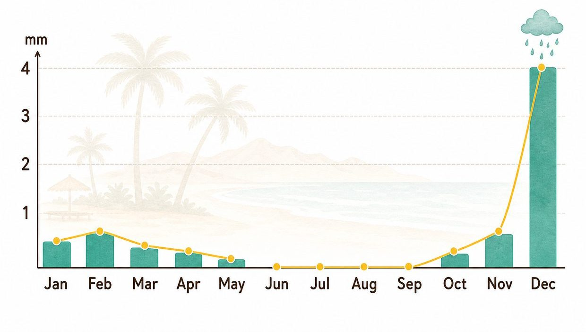
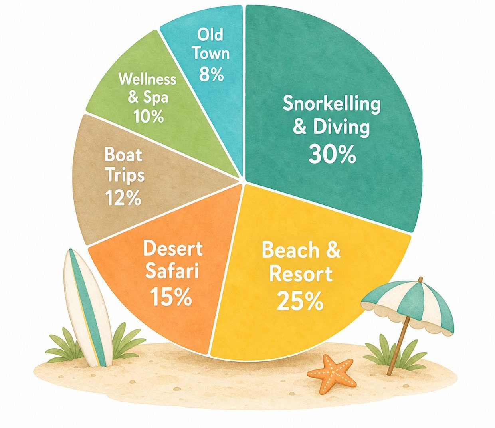
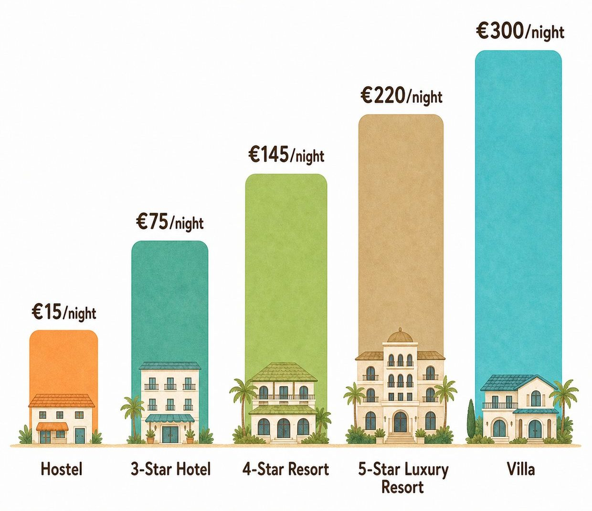

Sharm el-Sheikh – a Paradise for Divers
Diving and Snorkelling Oasis Sharm el-Sheikh
White beaches, crystal-clear water and some of the most impressive coral reefs of the Red Sea: Sharm el-Sheikh combines sun, relaxation and adventure like few other places.

Jean-Pascal Steinmetz
I have been travelling since I was a little boy and want to see the whole world – it fascinates me how many beautiful places are out there.
Located at the southern tip of the Sinai Peninsula, Sharm el-Sheikh connects the Red Sea with the desert like nowhere else. Snorkel at the house reef in the morning, stroll through the Old Market at noon and watch the sunset from a beach bar in the evening – short distances make it easy to fit a lot into one day.
Getting there is easy too: the international airport is only a few kilometres away from the main hotel areas.
Rain periods in Sharm el-Sheikh

Sharm el-Sheikh has no real rainy season. The desert climate keeps conditions dry all year round; in summer there is usually no rainfall at all. Short showers are most likely between November and April, especially in December. With only around 17 mm of rain per year, the region is perfect for everyone expecting plenty of sunshine.
Spring and autumn are the most pleasant seasons, with water temperatures around 25 degrees. Even in winter the sea stays warm enough for swimming – and for divers the season hardly matters: visibility under water is excellent almost all year.
Popular activities
Sharm el-Sheikh combines relaxed beach life, a fascinating underwater world and adventures in the desert. The favourites: diving and snorkelling in the Ras Mohammed National Park, a desert safari by quad or jeep, a boat trip to Tiran Island, the Old Market in the Old Town and an evening at lively Naama Bay. The chart shows how visitors spend their days.

Accommodation prices
Sharm el-Sheikh offers accommodation for almost every budget – from simple hostels to exclusive villas. The chart shows seasonal average prices per night and makes the differences between the categories visible at a glance.

All in all, Sharm el-Sheikh serves many types of travellers at once: divers find one of the best areas of the Red Sea, families appreciate shallow house reefs and calm bays, and everyone else simply gets guaranteed sunshine at fair prices.
When planning your trip, have a look at the hotel location: Naama Bay is lively and central, Sharks Bay is quieter with better house reefs, and the area around Nabq suits everyone who prefers space. A few practical things help as well: keep some cash for smaller shops and markets, plan extra time for transfers – traffic can be slow – and learn a few Arabic words, because it makes conversations more personal. Whatever you choose – the reef is never far away.
Follow me for more content like this, and
share the article with your friends!